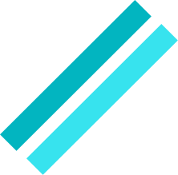

Desenvolvedor
Desenvolvedor
Front End &
UX/UI Design
Localizado em Goiânia/GO

Localizado em Goiânia/GO
Desenvolvo pequenos projetos como Bikcraft utilizando apenas HTML , CSS e JavaScript.Para aplicativos web como DOGs eu trabalhei no UI/UX Design do projeto.
2022Desenvolvo pequenos projetos como o Bikcraft utilizando apenas HTML,CSS e JavaScript. Para aplicativos web como a rede social DOgs
Desenvolvo pequenos projetos como o Bikcraft utilizando apenas HTML,CSS e JavaScript. Para aplicativos web como a rede social DOgs
Desenvolvo pequenos projetos como o Bikcraft utilizando apenas HTML,CSS e JavaScript. Para aplicativos web como a rede social DOgs
Desenvolvo pequenos projetos como o Bikcraft utilizando apenas HTML,CSS e JavaScript. Para aplicativos web como a rede social DOgs